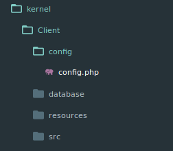
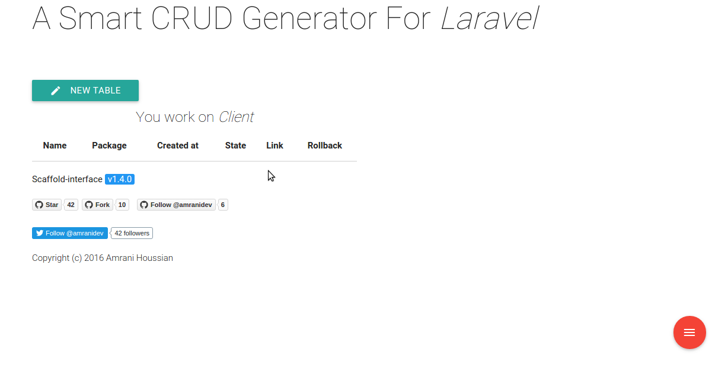

CRUD generator for packages
Previously, we've covered how to split a laravel app into packages/modules, and create Client package in our application include Person model,Migration and Controller.
See Split laravel app.
Allright, we could create CRUD for Person include views and controller functionalities, but all we need is a shortcut to generate crud faster for our package.
in this example we're going to use scaffold-interface (scaffold-interface)
Scaffold-interface is a smart CRUD generator for laravel (scaffold-interface) that allows you to generate model,view and controller just in few clicks without waste a lot of time creating views,controllers and routes, how cool is that, right??
Implementation
Well, after scaffold-interface installation, we've to remove our last class and resources of Person, and recreateing it with scaffold-interface.
As you can see scaffold-interface has an config file config/amranidev/config.php that we must replace it with Client package config file kernel/Client/config/config.php to allows Scaffold-Interface interact with our package.

Now lets create our first CRUD for our package, Access to the scaffold-interface http://{your-project-url}/scaffold.

So as you can see scaffolder told us that we're working on Client package environment, so cretae your first table Person and just add your fields, then click on ready and done.
Finally
Congratulations, the Person CRUD has been generated into Client Package just in few seconds.
NOTE : be aware about switching between packages, and save scaffold-interface laravel config environment somewhere in your project, to use it if necessary.
NOTE : if you want to generate OneToMany relationships between two different packages, all you have to care about is the controller namespace, that can be a kind of troubleshooting.